Todo is one of my first api projects, the project includes 3 subprojects (server - yii2, user(windows - WPF), user(android - android studio kotlin)).

Chat online is one of my api projects, it is a simple online text messenger, the project includes 2 subprojects (server - yii, windows - WPF).

Tic tac toe is one of my favorite api projects, as you can guess it is a tic tac toe game, the project includes 2 subprojects (server - yii, windows - WPF).

A.I is a locally running project that uses a simple neural network (perceptron) and guesses objects, the project was created in the WPF framework.